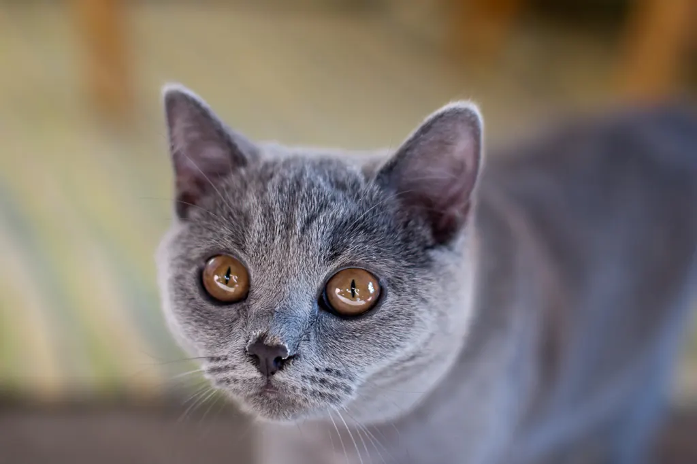

🐈 British shorthair : caractère et besoins

Ses origines
Le british shorthair descend des chats domestiques de Grande-Bretagne, sélectionnés au XIXe siècle pour leur robustesse et leur allure ronde. Le gris-bleu est sa couleur la plus connue.
Son caractère
Le british shorthair est réputé pour son calme et sa stabilité. Il aime rester près de ses humains, mais beaucoup n'apprécient pas d'être portés : respectez ses préférences.
Ses besoins
Il est souvent moins actif que d'autres races : proposez-lui chaque jour des séances de jeu de chasse pour le faire bouger, des griffoirs et des postes d'observation.
L'éducation
Comme tous les chats, il apprend avec des récompenses : caisse de transport, manipulation, soins. Ne le forcez pas, laissez-le venir.
L'entretien
Son poil court mais très dense demande un brossage régulier, plus fréquent pendant la mue. Surveillez sa ration : un chat calme prend facilement du poids.
Sa santé : points d'attention
Une maladie du cœur (la cardiomyopathie hypertrophique) et une maladie des reins (la polykystose rénale) sont connues dans la race. Demandez à l'éleveur les dépistages réalisés sur les parents, et parlez du suivi avec votre vétérinaire.
Au quotidien
Des séances de jeu courtes mais régulières, un poste d'observation près de la fenêtre, une ration bien pesée et un brossage régulier.
Avec les enfants et les autres animaux
Tolérant et calme, il vit généralement bien avec des enfants respectueux et avec d'autres animaux calmes.
Est-ce la race pour vous ?
- ✅ Oui si : Vous cherchez un chat calme, peu exigeant et facile à vivre.
- ❌ Plutôt non si : Vous rêvez d'un chat qui adore être porté et câliné.
Chaque animal est unique : le caractère dépend aussi de son histoire, de sa socialisation et de son éducation. Pensez à l'adoption en refuge ou en association de race, et passez du temps avec des chiens ou des chats de la race avant de vous décider.
Le matériel utile
Questions fréquentes
Le british shorthair aime-t-il les câlins ?
Il aime la présence de ses humains, mais beaucoup préfèrent être à côté plutôt que dans les bras.
Peut-il rester seul ?
Il supporte souvent mieux la solitude que d'autres races, à condition d'avoir un environnement riche et du jeu à votre retour.
Grossit-il facilement ?
Oui, s'il bouge peu : pesez sa ration et jouez avec lui chaque jour.
Pour aller plus loin : quelle litière choisir · quel griffoir choisir · le guide du chat · toutes nos fiches races · quel animal pour moi ?